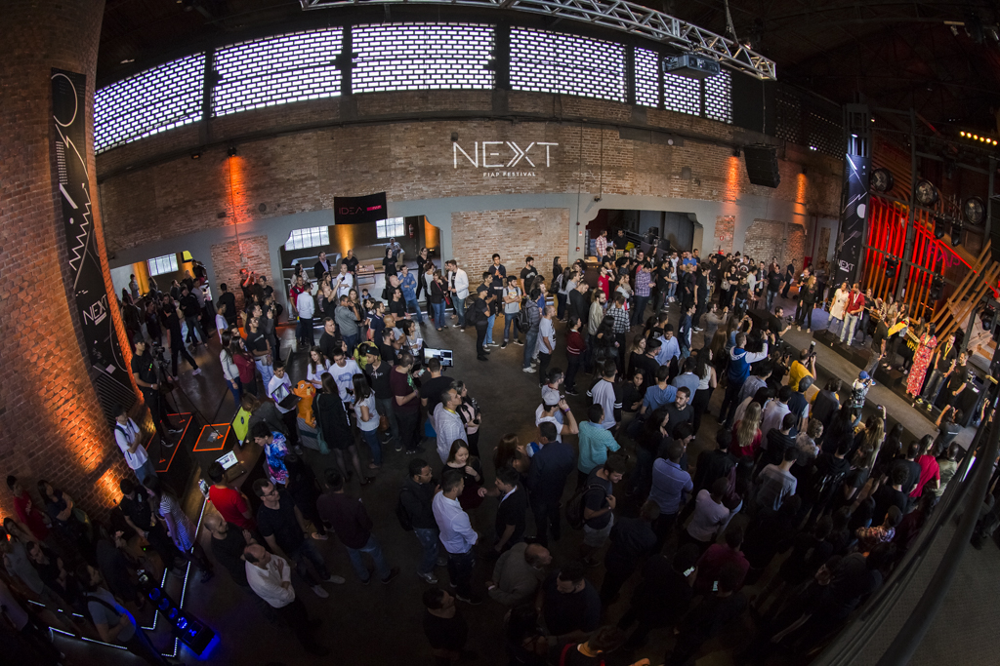

Página Inicial
RoboCup
A Robocup é a competição mais antiga da FIAP. Alunos dos 1°s anos de Sistemas de Informação constroem robôs para participar de duelos, onde o principal objetivo é estourar o balão que o adversário carrega. Para isso, todas as máquinas possuem armas em seu corpo. Mas a competição também exige o funcionamento pleno do robô: após estourar o balão do oponente, ele deve recolher sua arma, só assim é considerado o vencedor.
A competição mais antiga da FIAP, destaca-se como um evento emblemático que engaja e desafia os alunos do 1° ano de Sistemas de Informação. A natureza competitiva da competição, centrada em duelos entre robôs, adiciona uma dimensão emocionante à experiência educacional, incentivando a aplicação prática dos conhecimentos adquiridos em sala de aula.

A peculiaridade dessa competição reside no objetivo claro e envolvente: estourar o balão que o adversário carrega. A inclusão de armas nas máquinas intensifica a competição, exigindo não apenas habilidades de programação e controle, mas também estratégia e design eficiente. Essa abordagem única cria um ambiente de aprendizado que transcende o convencional, desafiando os estudantes a pensar criativamente
O robocop é um projeto interdisciplinar que busca a integração dos alunos de primeiro ano do curso de Sistemas de Informação. Essa integração acontece por meio de uma competição de robôs, onde durante o ano letivo os alunos participam da construção desse robô, que será posto no ringue no final do ano. O objetivo da competição é a integração dos alunos de primeiro ano do curso de Sistemas de Informação, além disso, integrar todas as matérias do primeiro aluno.

Next
O evento NEXT da FIAP é uma ocasião anualmente aguardada que reúne mentes criativas, inovadoras e empreendedoras para explorar o futuro da tecnologia, negócios e sociedade. Com uma atmosfera vibrante e repleta de ideias revolucionárias, o NEXT é muito mais do que uma simples conferência - é um ponto de encontro para visionários que estão moldando o amanhã.
A FIAP, renomada instituição de ensino focada em tecnologia da informação, promove o evento NEXT como uma plataforma para inspirar e capacitar a próxima geração de líderes no campo da tecnologia. Com palestras de especialistas renomados, workshops práticos, painéis de discussão e oportunidades de networking, o NEXT oferece um ambiente estimulante para explorar as últimas tendências e descobrir novas perspectivas sobre como a tecnologia está transformando o mundo ao nosso redor.

Durante o evento, os participantes têm a oportunidade de mergulhar em temas diversos, desde inteligência artificial e blockchain até cibersegurança e transformação digital. As palestras são conduzidas por profissionais líderes em suas áreas, proporcionando insights valiosos e visões sobre o futuro dessas tecnologias e seu impacto em diferentes setores da sociedade. o NEXT também incentiva a colaboração e a inovação por meio de atividades interativas, desafios de hackathon e exposições de startups.
O evento NEXT da FIAP não é apenas uma oportunidade de aprendizado e networking, mas também um catalisador para a criação de mudanças positivas no mundo. Ao reunir mentes brilhantes e apaixonadas pela tecnologia, o NEXT inspira ações que impulsionam a inovação, promovem o progresso e moldam um futuro mais promissor para todos.